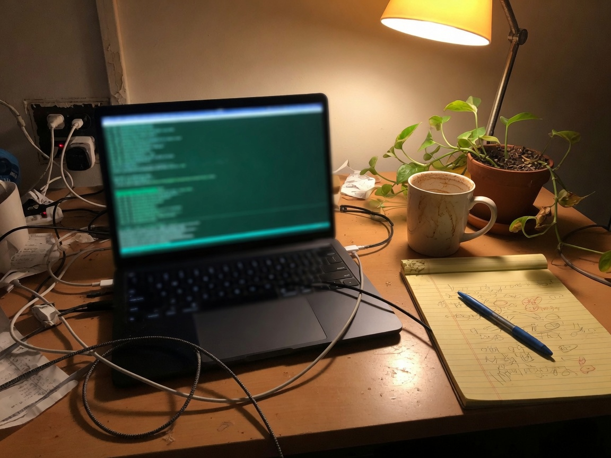

the controller can say on. the soil can be dry.
hermes, python, grok, claude, cursor, kimi. the crew, not the chat box.

this is the office now. still a plant. still a loop that has to close. (this picture is made, not mine.)
I run agents the way I used to run routes.
Hermes Agent (Nous Research) is daily infrastructure, not a toy. Custom skills. Cron jobs. Multi-step research. Production automations. I am not a ChatGPT tourist. I design workflows that actually fire when I am not watching, and I read the failures, which are the common case.
The rest of the bench is whatever is good at the job that day: Grok, Claude, Cursor, Kimi. I treat them like a crew. Different strengths, different failure modes, none of them are magic, all of them will confidently be wrong if you do not put gates on the output. If you have installed irrigation you already know this. The controller can say on. The soil can be dry. Trust the soil.
That is the whole method. Write a spec the agent can run. Give it tools. Make the success condition checkable — a label that actually says Made in USA, a gamma ramp that actually hits the hardware, a number that survives contact with a market. Log the miss. Patch the skill. Do not confuse a fluent paragraph with a closed loop.
things I have actually built:
wlr-gamma-control-unstable-v1 so night-light actually works on my
machine. The community had wanted this. It is a local working build. It is not
an official Pop!_OS merge. I say that on purpose.
I write Python. I live in Linux. I use git. I will not pretend I am a staff engineer. I will pretend even less that I am "technical enough to demo." I operate the stack I would be asked to sell, and I can go a level down when the demo gets real.
Why this belongs here, especially if you work on a model that people are going to take seriously: you should not hire people to represent that model who only know it as a chat box. I want to be in the room where the product is serious, the stakes are real, and someone still has to talk to humans. I have done the human part in dirt and on a dialer. I am doing the systems part now on purpose.
If you are Anthropic: I am not performing "I use Claude." I use Claude, and Grok, and Cursor, and Kimi, and Hermes, as operators of a system I am responsible for. I would like to do that for a product whose constraints I respect.